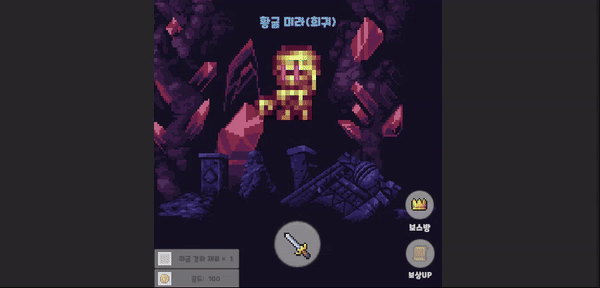
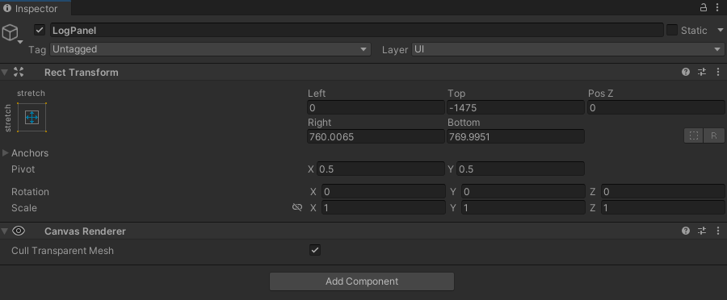
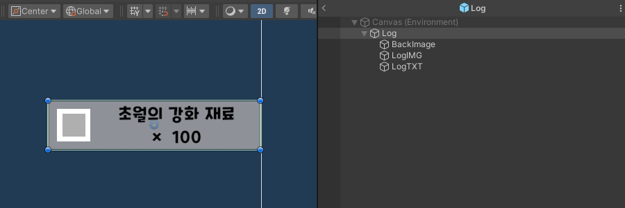

GAME LOGIC
유니티 엔진에서 구현한 게임 개발에 사용된 다양한 로직들을 소개합니다.
UnityUI - 아이템 획득 시에 출력되는 로그 UI의 구성


게임에서 아이템이나 게임머니 등을 획득 했을 때 화면에 출력되는 로그 시스템을 구성했습니다.

먼저 CANVAS 내에 아이템 로그 UI의 부모가 될 오브젝트를 만들고 UI를 배치할 공간과 Rect Transform을 지정합니다.

화면에 보여졌다 사라질 아이템 로그 UI를 prefab으로 구성한 후에 스크립트를 작성합니다.
(UI 배경, 아이템 이미지, 아이템 텍스트를 자식으로 포함)
(UI 배경, 아이템 이미지, 아이템 텍스트를 자식으로 포함)
새로운 아이템 로그를 지정된 위치에 띄운고 기존에 생성 되었던 로그들을 새로운 아이템 로그의 높이만큼 계속 위로 올리는 방식으로 구현했습니다.
화면에 출력된 아이템 로그는 Coroutine을 통해 지정된 시간만큼 화면에 출력되고 사라집니다.